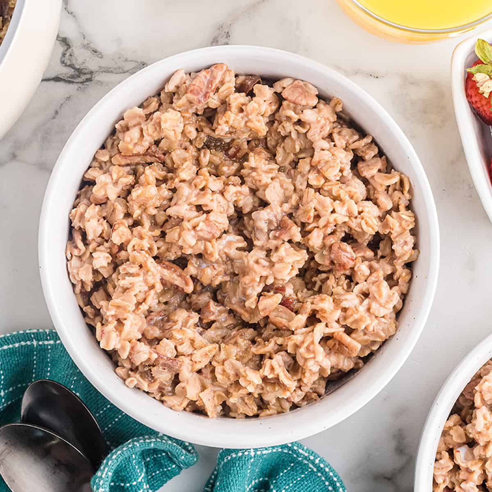

Oatmeal

Description
This recipe is my grandma's famous cinnamon and brown sugar oatmeal recipe for anyone
who needs a light snack, a quick breakfast, or a hearty meal. Serving size is 2 people, best served warm.
Ingredients
- Vanilla extract
- Cinnamon
- Butter
- Brown sugar
- Water
- Oats
Steps
- Boil 1 3/4 cups of water in a pot
- When water is boiling add a spoonful of vanilla extract
- Add 1 cup of oats to the water
- Set heat on medium-low and stir
- Add 4 - 6 good shakes of cinnamon, stir
- Add a spoonful of butter, stir
- Add 2 good scoops of brown sugar, THE MORE THE BETTER
- Stir and cook 1 min over medium-low heat then simmer to off and let sit for 10 minutes
Done!